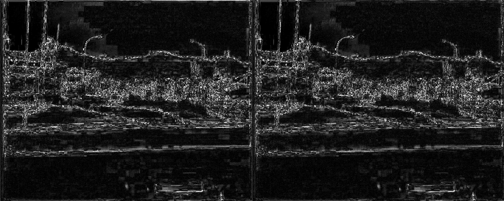
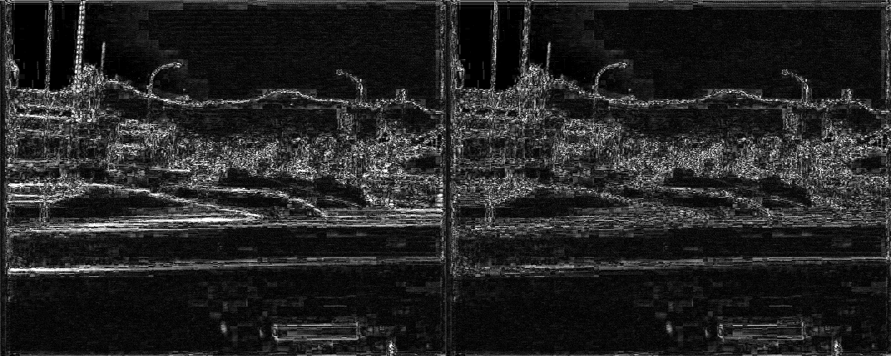

Deblock before or after deinterlacing?
Probe, 2026-11-03. No issue: a user asked whether deblocking should run before deinterlacing, as a chat with Google Gemini had suggested. VapourBox runs it after.
- Deinterlacing on (the normal case). Per-field deblocking before QTGMC beats today's order by at most 0.05 dB at the app's default strength, and 0.05–0.14 dB at a much stronger setting. The visible blockiness left over is the same. Recommendation: don't reorder the pipeline.
- Deinterlacing off on an interlaced source. Today the deblocker runs on the woven frame. Running it per field scored better in every case: +0.03 to +0.20 dB at default strength and +0.08 to +0.30 dB at strong, with SSIM agreeing. The gain is small but always points the same way, and the change is cheap. Recommendation: deblock per field when the output stays interlaced.
- DCTFilter on a woven frame is damaging. This was added after the main run (§3, "DCTFilter"). The third Deblock method, run on the woven frame, scored 1.5–3.7 dB below not filtering at all, because it attenuates the combing between fields as if it were high-frequency detail. Per field, it's neutral to slightly positive. With deinterlacing off, today's app does the damaging version.
- Side finding. At 1000 kbps, raising Deblock_QED from the default 24/26 to 36/44 gained more than any choice of order (about +0.5 dB against +0.2 dB). One clip is no reason to change a default, but it does put the order question in proportion.
1. Why order could matter
MPEG-2 and DV code each macroblock with either a frame DCT, where 8×8 blocks span both fields and edges fall every 8 frame lines, or a field DCT, where each block is 8 lines of one field and edges fall every 16 frame lines. Both deblockers in the app (haf.Deblock_QED and core.deblock.Deblock) assume an 8×8 grid starting at the frame's top-left corner. That grid is exact only on the decoded interlaced frame.
After QTGMC, the vertical block edges stay on the grid, because there's no horizontal resampling. The horizontal ones don't: each output frame is one field interpolated to full height, the bottom field sits a line lower, and QTGMC's motion-compensated smoothing moves and softens what remains. Deblocking the woven frame has the opposite problem. In moving areas its vertical filtering mixes the two fields. Deblocking per field avoids that mixing, but misses the edges of frame-DCT blocks that fall between field-grid lines.
2. Method
Two 720×576 TFF 4:2:0 fixtures, each encoded with ffmpeg's mpeg2video at 1000, 1500 and 3000 kbps. The encoder used interlaced DCT and interlaced motion estimation (-flags +ildct+ilme), GOP 12 with 2 B-frames, to approximate a DVD or a capture-card recording:
- film: frames 1400–1639 of
small_clip.mp4, treated as 50 Hz field samples (as in the #117 report), upscaled to 720×576 and woven into 120 interlaced frames. The 50p frames are the ground truth. - vhs:
interlaced_test.avi, a real 79-frame capture stored losslessly. It has no true 50p, so the deinterlaced reference is QTGMC Slower run on the lossless capture.
Each decoded clip went through scripts/probe.vpy, using the app's own pipe_source.py and the bundled macOS arm64 vspipe, with one of these orders:
- no deblock
- after QTGMC: today's order
- woven frame, before QTGMC
- per field, before:
SeparateFields → deblock → DoubleWeave[::2], then QTGMC
Every order was run with QTGMC Slower at double rate, and again with deinterlacing off. Deblock_QED and simple Deblock were both run at the app defaults (24/26 and 24). Scores against the reference are luma PSNR, luma SSIM, VMAF, and ffmpeg's blockdetect on the output (lower means fewer visible 8-pixel edges). The machine was an Apple M1 Pro. The full matrix takes about 2.5 minutes.
- The film ground truth has blocks of its own.
small_clip.mp4is 450 kbps H.264 at 320×240. Its compression blocks were upscaled 2.25× into the reference, which shows in the dark crop of Figure 3. They sit on an 18-pixel grid, not the 8-pixel one, so a deblocker barely touches them. They still lower every film score by the same amount. - The vhs reference is QTGMC's own output, not the truth. It favours whatever looks most like QTGMC applied to a clean source.
- PSNR rewards softness. Deblocking is a smoothing filter, so part of any PSNR gain is blur. VMAF, which rewards detail, falls slightly when deblocking film (Table 1). That's why the blockiness column and the images matter as much as the dB.
- ffmpeg's encoder is not a DVD authoring encoder. Its choice between field and frame DCT for each macroblock may differ from a hardware encoder's.
3. Results
The green row in each group has the best PSNR. "Δ vs none" is the PSNR gain over not deblocking at all.
Deinterlacing on
| Fixture | kbps | Order | PSNR-Y dB | Δ vs none | SSIM-Y | VMAF | Blockiness |
|---|---|---|---|---|---|---|---|
| film | 1000 | no deblock | 36.02 | 0.9321 | 61.54 | 4.98 | |
| film | 1000 | after QTGMC (today) | 36.18 | +0.16 | 0.9363 | 61.34 | 2.43 |
| film | 1000 | woven frame, before | 36.17 | +0.15 | 0.9363 | 61.30 | 2.45 |
| film | 1000 | per field, before | 36.22 | +0.20 | 0.9373 | 61.34 | 2.44 |
| film | 1500 | no deblock | 38.89 | 0.9564 | 76.93 | 3.30 | |
| film | 1500 | after QTGMC (today) | 39.07 | +0.18 | 0.9591 | 76.66 | 1.88 |
| film | 1500 | woven frame, before | 39.04 | +0.15 | 0.9588 | 76.58 | 1.91 |
| film | 1500 | per field, before | 39.10 | +0.21 | 0.9595 | 76.53 | 1.91 |
| film | 3000 | no deblock | 43.48 | 0.9806 | 92.23 | 2.12 | |
| film | 3000 | after QTGMC (today) | 43.62 | +0.14 | 0.9815 | 91.85 | 1.40 |
| film | 3000 | woven frame, before | 43.53 | +0.05 | 0.9810 | 91.70 | 1.40 |
| film | 3000 | per field, before | 43.61 | +0.13 | 0.9814 | 91.72 | 1.42 |
| vhs | 1000 | no deblock | 33.18 | 0.9233 | 71.79 | 3.39 | |
| vhs | 1000 | after QTGMC (today) | 33.25 | +0.08 | 0.9260 | 71.83 | 1.82 |
| vhs | 1000 | woven frame, before | 33.25 | +0.07 | 0.9258 | 71.81 | 1.93 |
| vhs | 1000 | per field, before | 33.28 | +0.10 | 0.9266 | 71.92 | 1.87 |
| vhs | 1500 | no deblock | 33.77 | 0.9308 | 75.02 | 3.04 | |
| vhs | 1500 | after QTGMC (today) | 33.85 | +0.08 | 0.9332 | 75.08 | 1.71 |
| vhs | 1500 | woven frame, before | 33.85 | +0.07 | 0.9330 | 75.06 | 1.79 |
| vhs | 1500 | per field, before | 33.87 | +0.10 | 0.9337 | 75.11 | 1.76 |
| vhs | 3000 | no deblock | 36.95 | 0.9552 | 88.43 | 2.45 | |
| vhs | 3000 | after QTGMC (today) | 37.07 | +0.12 | 0.9572 | 88.47 | 1.45 |
| vhs | 3000 | woven frame, before | 37.05 | +0.10 | 0.9568 | 88.46 | 1.52 |
| vhs | 3000 | per field, before | 37.09 | +0.14 | 0.9574 | 88.50 | 1.50 |
The best PSNR alternates between per-field and after. Per-field leads at 1000 and 1500 kbps by 0.03–0.05 dB, and after leads at 3000 kbps by 0.01 dB on film. Blockiness agrees to within 0.1 across the three orders. Over individual frames of the 1000 kbps run, per-field beat after in 193 of 240 film frames and 93 of 158 vhs frames. The largest single-frame gap was +0.59 dB (vhs) and the worst −0.11 dB.
| Fixture | kbps | Order | PSNR-Y dB | Δ vs none | SSIM-Y | VMAF | Blockiness |
|---|---|---|---|---|---|---|---|
| film | 1000 | no deblock | 36.02 | 0.9321 | 61.54 | 4.98 | |
| film | 1000 | after QTGMC (today) | 36.14 | +0.12 | 0.9361 | 61.39 | 3.12 |
| film | 1000 | woven frame, before | 36.12 | +0.10 | 0.9354 | 61.39 | 2.96 |
| film | 1000 | per field, before | 36.15 | +0.13 | 0.9363 | 61.35 | 2.92 |
| film | 1500 | no deblock | 38.89 | 0.9564 | 76.93 | 3.30 | |
| film | 1500 | after QTGMC (today) | 39.07 | +0.18 | 0.9597 | 76.67 | 2.21 |
| film | 1500 | woven frame, before | 39.01 | +0.12 | 0.9588 | 76.63 | 2.10 |
| film | 1500 | per field, before | 39.06 | +0.17 | 0.9594 | 76.59 | 2.09 |
| film | 3000 | no deblock | 43.48 | 0.9806 | 92.23 | 2.12 | |
| film | 3000 | after QTGMC (today) | 43.71 | +0.23 | 0.9823 | 91.78 | 1.61 |
| film | 3000 | woven frame, before | 43.54 | +0.06 | 0.9813 | 91.73 | 1.52 |
| film | 3000 | per field, before | 43.62 | +0.14 | 0.9816 | 91.77 | 1.52 |
| vhs | 1000 | no deblock | 33.18 | 0.9233 | 71.79 | 3.39 | |
| vhs | 1000 | after QTGMC (today) | 33.25 | +0.07 | 0.9266 | 71.81 | 2.24 |
| vhs | 1000 | woven frame, before | 33.22 | +0.04 | 0.9256 | 71.77 | 2.13 |
| vhs | 1000 | per field, before | 33.25 | +0.08 | 0.9266 | 71.81 | 2.08 |
| vhs | 1500 | no deblock | 33.77 | 0.9308 | 75.02 | 3.04 | |
| vhs | 1500 | after QTGMC (today) | 33.85 | +0.08 | 0.9339 | 75.04 | 2.10 |
| vhs | 1500 | woven frame, before | 33.83 | +0.06 | 0.9331 | 75.05 | 1.97 |
| vhs | 1500 | per field, before | 33.86 | +0.08 | 0.9338 | 75.05 | 1.94 |
| vhs | 3000 | no deblock | 36.95 | 0.9552 | 88.43 | 2.45 | |
| vhs | 3000 | after QTGMC (today) | 37.09 | +0.14 | 0.9582 | 88.45 | 1.82 |
| vhs | 3000 | woven frame, before | 37.02 | +0.07 | 0.9571 | 88.41 | 1.67 |
| vhs | 3000 | per field, before | 37.08 | +0.13 | 0.9577 | 88.46 | 1.64 |
Simple Deblock is much the same: the orders are within 0.04 dB of each other, except film at 3000 kbps, where after leads per-field by 0.09 dB.

Deinterlacing off (output stays interlaced)
| Fixture | kbps | Order | PSNR-Y dB | Δ vs none | SSIM-Y | VMAF | Blockiness |
|---|---|---|---|---|---|---|---|
| film | 1000 | no deblock | 35.43 | 0.9317 | 71.01 | 9.49 | |
| film | 1000 | woven frame, before | 35.58 | +0.15 | 0.9357 | 70.82 | 3.42 |
| film | 1000 | per field, before | 35.66 | +0.23 | 0.9372 | 70.82 | 3.35 |
| film | 1500 | no deblock | 38.36 | 0.9573 | 85.49 | 5.73 | |
| film | 1500 | woven frame, before | 38.55 | +0.18 | 0.9595 | 85.30 | 2.37 |
| film | 1500 | per field, before | 38.66 | +0.29 | 0.9610 | 85.21 | 2.34 |
| film | 3000 | no deblock | 44.11 | 0.9832 | 98.95 | 3.25 | |
| film | 3000 | woven frame, before | 44.22 | +0.11 | 0.9831 | 98.80 | 1.58 |
| film | 3000 | per field, before | 44.41 | +0.31 | 0.9844 | 98.70 | 1.60 |
| vhs | 1000 | no deblock | 32.44 | 0.9019 | 76.30 | 8.27 | |
| vhs | 1000 | woven frame, before | 32.50 | +0.07 | 0.9042 | 76.34 | 3.15 |
| vhs | 1000 | per field, before | 32.53 | +0.09 | 0.9054 | 76.37 | 3.07 |
| vhs | 1500 | no deblock | 33.01 | 0.9103 | 79.28 | 7.22 | |
| vhs | 1500 | woven frame, before | 33.08 | +0.07 | 0.9122 | 79.33 | 2.75 |
| vhs | 1500 | per field, before | 33.11 | +0.10 | 0.9136 | 79.35 | 2.70 |
| vhs | 3000 | no deblock | 36.00 | 0.9379 | 91.40 | 5.46 | |
| vhs | 3000 | woven frame, before | 36.10 | +0.10 | 0.9389 | 91.43 | 2.02 |
| vhs | 3000 | per field, before | 36.15 | +0.15 | 0.9406 | 91.44 | 2.02 |
Scored against the clean interlaced frames. Per-field beats woven in PSNR and SSIM at every bitrate on both fixtures: by 0.08–0.20 dB on film and 0.03–0.05 dB on vhs. Blockiness is the same.
A much stronger deblock
| Fixture | kbps | Order | PSNR-Y dB | Δ vs none | SSIM-Y | Blockiness |
|---|---|---|---|---|---|---|
| film | 1000 | after QTGMC (today) | 36.50 | +0.48 | 0.9403 | 1.92 |
| film | 1000 | woven frame, before | 36.46 | +0.44 | 0.9397 | 1.90 |
| film | 1000 | per field, before | 36.64 | +0.62 | 0.9423 | 1.90 |
| vhs | 1000 | after QTGMC (today) | 33.38 | +0.20 | 0.9277 | 1.63 |
| vhs | 1000 | woven frame, before | 33.36 | +0.18 | 0.9272 | 1.67 |
| vhs | 1000 | per field, before | 33.43 | +0.25 | 0.9286 | 1.63 |
| Fixture | kbps | Order | PSNR-Y dB | Δ vs none | SSIM-Y | Blockiness |
|---|---|---|---|---|---|---|
| film | 1000 | woven frame, before | 35.87 | +0.43 | 0.9375 | 2.23 |
| film | 1000 | per field, before | 36.16 | +0.73 | 0.9416 | 2.67 |
| vhs | 1000 | woven frame, before | 32.63 | +0.20 | 0.9051 | 2.06 |
| vhs | 1000 | per field, before | 32.71 | +0.28 | 0.9078 | 2.24 |
At 36/44 the deblocker does about three times as much (Δ vs none: +0.48 dB against +0.16 on film), and the gap between orders grows with it. Deinterlaced, per-field leads after by 0.14 dB (film) and 0.05 dB (vhs). Left interlaced, per-field leads woven by 0.30 and 0.08 dB. Woven deblocking now scores lower on blockiness than per-field when left interlaced (2.23 against 2.67 on film). That matches the theory: on the frame grid, per-field filtering misses frame-DCT block edges.
DCTFilter (added the same day, while building the fix)
The main run covered only the two edge deblockers. Before applying the per-field change to all three Deblock methods, DCTFilter was run the same way at the app's default curve (cutoff 5, strength 0.6, luma only) on the 1000 kbps fixtures (scripts/dct.sh).
| Fixture | kbps | Order | PSNR-Y dB | Δ vs none | SSIM-Y | Blockiness |
|---|---|---|---|---|---|---|
| film | 1000 | woven frame, before | 31.71 | -3.72 | 0.9121 | 9.75 |
| film | 1000 | per field, before | 35.51 | +0.08 | 0.9326 | 10.61 |
| vhs | 1000 | woven frame, before | 30.89 | -1.54 | 0.8875 | 8.86 |
| vhs | 1000 | per field, before | 32.49 | +0.05 | 0.9022 | 9.41 |
| Fixture | kbps | Order | PSNR-Y dB | Δ vs none | SSIM-Y | Blockiness |
|---|---|---|---|---|---|---|
| film | 1000 | after QTGMC (today) | 36.09 | +0.07 | 0.9328 | 5.16 |
| film | 1000 | woven frame, before | 31.75 | -4.27 | 0.9111 | 4.91 |
| film | 1000 | per field, before | 36.10 | +0.08 | 0.9330 | 5.04 |
| vhs | 1000 | after QTGMC (today) | 33.24 | +0.06 | 0.9241 | 3.55 |
| vhs | 1000 | woven frame, before | 31.21 | -1.97 | 0.9102 | 3.60 |
| vhs | 1000 | per field, before | 33.08 | -0.10 | 0.9233 | 3.42 |
On the woven frame it does real damage: −3.72 dB on film and −1.54 dB on vhs against no filtering, and −4.3 / −2.0 dB when QTGMC follows it. DCTFilter scales coefficients from 8×8 DCT blocks spanning both fields. On a moving edge, the line-to-line alternation between fields is the highest vertical frequency, so it gets attenuated, which blends the fields. Per field the same filter is neutral to slightly positive (+0.05 to +0.08 dB), the same as running it after QTGMC. Its blockiness score rises in every arrangement because DCTFilter flattens block interiors rather than smoothing edges, so it isn't a deblocker in that metric's sense.

4. Decisions and why
- Keep Deblock after Deinterlace. At the defaults the gain from moving it is ≤0.05 dB, within what one clip can resolve, with no difference in blockiness. Reordering would also move it ahead of Noise Reduction and change every existing preset's output, for a gain nobody would see.
- When deinterlacing is off and the source is interlaced, deblock per field, for all three methods. For the edge deblockers it beat woven deblocking on PSNR and SSIM in all 14 comparisons (both methods, both strengths). For DCTFilter it's the difference between a −3.7 dB loss and a small gain. It's a few lines in the Deblock block of both templates, gated on the same field-order decision that
{{#SET_FIELD_BASED}}already uses (ScriptGenerator::field_based_for). Built in the same branch. A 4:2:0 frame whose field height is odd in chroma (486 lines) can't be split into fields; the script falls back to the woven frame there, as before. - Leave the default strength alone for now. 36/44 scored better at 1000 kbps, but only one strength was tried, VMAF wasn't run for it, and a stronger default would also soften sources that aren't blocky. That needs its own probe across bitrates.
5. Not tested
- NTSC (720×480), DV (2-4-8 DCT), and interlaced H.264 (PAFF/MBAFF). H.264's in-loop deblocking runs in the decoder, so there's less left for us to do.
- Real DVD or broadcast MPEG-2 from a hardware encoder.
- Any QTGMC preset other than Slower. Noise Reduction between QTGMC and Deblock, as the app's order puts it.
- DCTFilter at any curve but the default, and x86. The deblock plugin is integer C on every platform, but QTGMC's interpolation differs.
- More than two short clips.
6. Reproducing
export SCRATCH=/some/scratch/dir # large raw files go here (~1.3 GB) docs/reports/2026-11-deblock-order/scripts/make_fixtures.sh docs/reports/2026-11-deblock-order/scripts/run.sh # → $SCRATCH/results.csv (copied here as results.csv) docs/reports/2026-11-deblock-order/scripts/strong.sh # → $SCRATCH/results_strong.csv docs/reports/2026-11-deblock-order/scripts/dct.sh # → $SCRATCH/results_dct.csv docs/reports/2026-11-deblock-order/scripts/imgs.sh # → img/ python3 -I docs/reports/2026-11-deblock-order/scripts/tables.py # the tables above
Needs deps/macos-arm64. The scripts call that platform's ffmpeg and vspipe directly, and use BSD stat -f.